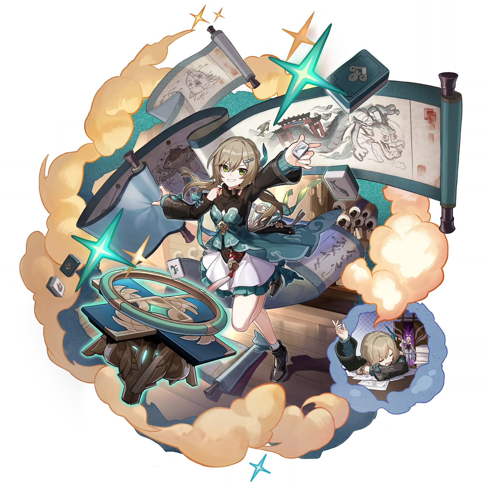

Qingque
Best Qingque build guide for Honkai Star Rail. See Qingque's best Relics, Light Cones, teams, Eidolons, Trace priority, and how to play Qingque.
🔍 Detail Skill
Semua skill aktif dan pasif beserta efeknya.
Tosses 1 jade tile from the suit with the fewest tiles in hand to deal Quantum DMG equal to #1[i]% of Qingque's ATK to a single enemy.
Deals Quantum DMG equal to #1[i]% of Qingque's ATK to a single enemy, and deals Quantum DMG equal to #2[i]% of Qingque's ATK to enemies adjacent to it. "Cherry on Top!" cannot recover Skill Points.
Immediately draws #1[i] jade tile(s) and increases DMG by #2[i]% until the end of the current turn. This effect can stack up to #3[i] time(s). The turn will not end after this Skill is used.
When an ally's turn starts, Qingque randomly draws 1 tile from 3 different suits and can hold up to 4 tiles at one time. If Qingque starts her turn with 4 tiles of the same suit, she consumes all tiles to enter the "Hidden Hand" state. While in this state, Qingque cannot use her Skill again. At the same time, Qingque's ATK increases by #1[i]%, and her Basic ATK "Flower Pick" is enhanced, becoming
After using Technique, Qingque draws #1[i] jade tile(s) when the battle starts.
⚔ Light Cone Terbaik
Diurutkan dari yang paling kuat. Persentase menunjukkan performa relatif terhadap pilihan terbaik.
💎 Relic Set Terbaik
Set terbaik untuk karakter ini, diurutkan berdasarkan prioritas.
📊 Stat Utama
Stat yang dicari pada tiap slot.
👥 Tim yang Direkomendasikan
Karakter yang sering dipasangkan bersama Qingque.
 Sparkle
Sparkle
 Silver Wolf
Silver Wolf
 Dan Heng • Permansor Terrae
Dan Heng • Permansor Terrae
 Qingque
Qingque
🔗 Lanjutkan
Build ini dirangkum dari Prydwen Institute. Starwise tidak menghitung sendiri. Angka bisa berubah setelah patch atau karakter baru rilis.